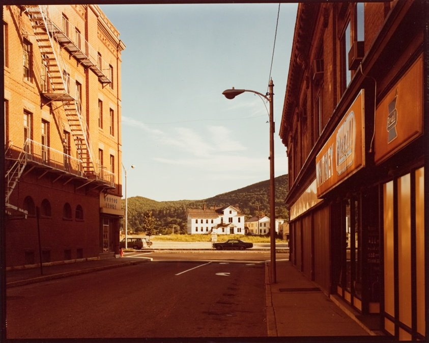

Holden St., North Adams, Massachusetts
Stephen Shore · 13 July 1974, printed 1976 · Chromogenic print · 19.5 × 24.5 cm (image) · Art Institute of Chicago
In copyright. Look and learn: shown for study, not for download.
Stephen Shore took this picture on 13 July 1974, on one of the cross-country road trips he made through the decade. He had begun in colour with a hand-held 35 mm camera, moved to a 4×5 view camera and settled on the 8×10 format. The print was made in 1976 by three printers at Berkey K&L under his supervision, for a portfolio of twelve photographs. Shore was twenty-six. At fourteen he had sold three photographs to Edward Steichen at the Museum of Modern Art.